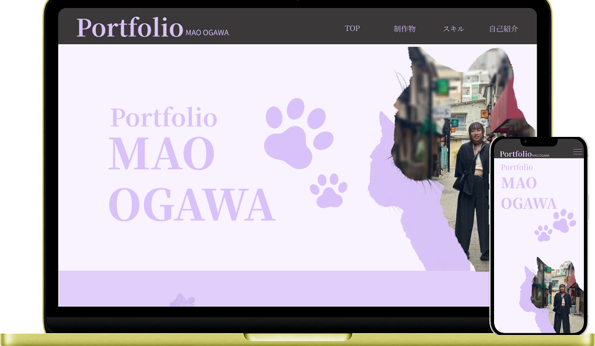
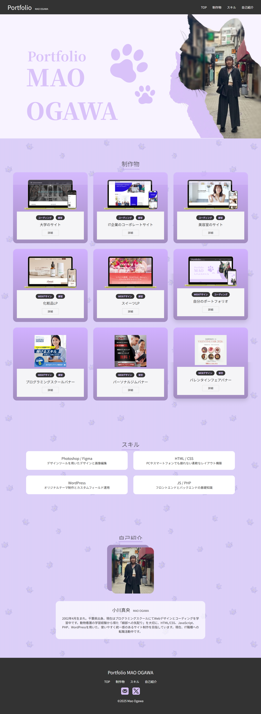
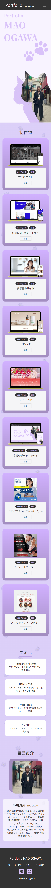

WEBデザイン
コーディング
自分のポートフォリオサイト

概要
自分のポートフォリオサイト。 転職活動を行うにあたって自分の経歴や制作物を伝えるためのポートフォリオを制作。
使用ツール
Figma
Photoshop
Visual Studio Code
制作時期
2026年4月作成
ワイヤー7日
デザイン8日
コーディング10日
意識したこと・所感
これまでの学習成果と実力を集約したポートフォリオサイトです。
「自分らしさ」を表現する独自のブランドカラーを設定しつつ、UIデザインの基本である視認性と操作性を重視して構築しました。
Figmaで緻密に設計したデザインを、VS Codeで忠実にコーディングし、エンジニア・デザイナー両面からの視点を持ち合わせていることを表現しています。
継続的なアップデートを前提に、拡張性の高いコード構造を意識して制作した一作です。

